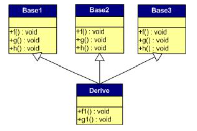

原文连接:https://www.cnblogs.com/xgmzhna/p/10934562.html
自上一个帖子之间跳过了一篇总结性的帖子，之后再发，今天主要研究了c++语言当中虚函数对多态的实现，感叹于c++设计者的精妙绝伦
c++中虚函数表的作用主要是实现了多态的机制。首先先解释一下多态的概念，多态是c++的特点之一，关于多态，简而言之就是 用父类的指针指向其子类的实例，然后通过父类的指针调用实际子类的成员函数，这种方法呢，可以让父类的指针具有多种形态，也就是说不需要改动很多的代码就可以让父类这一种指针，干一些很多子类指针的事情，这里是从虚函数的实现机制层面进行研究
在写这篇帖子之前对于相关的文章进行了查阅，基本上是大段的文字，所以我的这一篇可能会用大量的图形进行赘述（如果理解有误的地方，烦请大佬能够指出），接下来就言归正传：
首先介绍一下为什么会引进多态呢，基于c++的复用性和拓展性而言，同类的程序模块进行大量重复，是一件无法容忍的事情，比如我设置了苹果，香蕉，西瓜类，现在想把这些东西都装到碗这个函数里，那么在主函数当中，声明对象是必须的，但是每一次装进碗里对于水果来说，都要用自己的指针调用一次装的功能，那为什么不把这些类抽象成一个水果类呢，直接定义一个水果类的指针一次性调用所有水果装的功能呢，这个就是利用父类指针去调用子类成员，但是这个思想受到了指针指向类型的限制，也就是说表面指针指向了子类成员，但实际上还是只能调用子类成员里的父类成员，这样的思想就变的毫无意义了，如果想要解决这个问题，只要在父类前加上virtual就可以解决了，这里就是利用虚函数实现多态的实例。
首先还是作为举例来两个类，在之前基础知识的帖子中提到过，空类的大小是一个字节（占位符），函数，静态变量都在编译期就形成了，不用类去分配空间，但是做一个小实验，看一看在定义了虚函数之后，类的大小是多少呢
1 #include<iostream>
2 using namespace std;
3 class CFather
4 {
5 public:
6 virtual void AA() //虚函数标识符
7 {
8 cout << "CFather :: AA()" << endl;
9 }
10 void BB()
11 {
12 cout << "CFather :: BB()" << endl;
13 }
14 };
15 class CSon : public CFather
16 {
17 public:
18 void AA()
19 {
20 cout << "CSon :: AA()" << endl;
21 }
22 void BB()
23 {
24 cout << "CSon :: BB()" << endl;
25 }
26 };
27 int main()
28 {
29 cout << sizeof(CFather) << endl; //测试加了虚函数的类
30
31 system("pause");
32 return 0;
33 }很明显类里装了一个 4个字节的东西，除了整形int，就是指针了，没错这里装的就是函数指针
先把这个代码，给抽象成图形进行理解，在这CFather为A，CSon为B

此时就是一个单纯的继承的情况，不存在虚函数，然后我new一个对象，A *p = new A；那么 p -> AA(),必然是指向A类中的AA()函数，那么函数的调用有两种方式 一种函数名加（）直接调用，一种是利用函数指针进行调用，在这里我想要调用子类的，就可以利用函数指针进行调用，假设出来两个函数指针，来指向B类中的两个成员函数，如果我父类想要调用子类成员，就可以通过 p指针去调用函数指针，再通过函数指针去调用成员函数
，
每一个函数都可以用一个函数指针去指着，那么每一类中的函数指针都可以形成自己的一个表，这个就叫做虚函数表
那么在创建对象后，为什么类中会有四个字节的内存空间呢？
在C++的标准规格说明书中说到，编译器必需要保证虚函数表的指针存在于对象中最前面的位置（这是为了保证正确取到虚函数的偏移量）。这意味着我们通过对象实例的地址得到这张虚函数表，然后就可以遍历其中函数指针，并调用相应的函数。也就是说这四个字节的指针，代替了上图中（p->*pfn）（）的作用，指向了函数指针，也就是说，在使用了虚函数的父类成员函数，虽然写的还是p->AA(),实际上却是，(p->*(vfptr[0])),而指向哪个虚函数表就由，创建的对象来决定
至此，就能理解如何用虚函数这个机制来实现多态的了
下面，我将分别说明“无覆盖”和“有覆盖”时的虚函数表的样子。没有覆盖父类的虚函数是毫无意义的。我之所以要讲述没有覆盖的情况，主要目的是为了给一个对比。在比较之下，我们可以更加清楚地知道其内部的具体实现。
无虚数覆盖
下面，再让我们来看看继承时的虚函数表是什么样的。假设有如下所示的一个继承关系：
请注意，在这个继承关系中，子类没有重载任何父类的函数。那么，在派生类的实例中，Derive d; 的虚函表：
我们可以看到下面几点：
1）虚函数按照其声明顺序放于表中。
2）父类的虚函数在子类的虚函数前面。
有虚数覆盖
覆盖父类的虚函数是很显然的事情，不然，虚函数就变得毫无意义。下面，我们来看一下，如果子类中有虚函数重载了父类的虚函数，会是一个什么样子？假设，我们有下面这样的一个继承关系。
为了让大家看到被继承过后的效果，在这个类的设计中，我只覆盖了父类的一个函数：f()。那么，对于派生类的实例，其虚函数表会是下面的一个样子：
我们从表中可以看到下面几点，
1）覆盖的f()函数被放到了虚表中原来父类虚函数的位置。
2）没有被覆盖的函数依旧。
这样，我们就可以看到对于下面这样的程序，
Base *b = new Derive();
b->f();
由b所指的内存中的虚函数表的f()的位置已经被Derive::f()函数地址所取代，于是在实际调用发生时，是Derive::f()被调用了。这就实现了多态。
2019-05-28 00:15:30 编程小菜鸟自我反思，今天图画的太丑了，大家多多担待，如果技术上有什么偏差，大家可以踊跃批评我，谢谢！！！
/*==========================================================手动分割线================================================*/
感谢@奕韵风华提出的问题，现在将多继承的虚函数实现多态的情况讨论一下，另再加上从代码层面上对这个机制有更深的理解
讨论多继承还是从有无虚函数覆盖的情况来开始
无虚函数覆盖
假设有下面这样一个类的继承关系。注意：子类并没有覆盖父类的函数。

对于子类实例中的虚函数表，是下面这个样子：

我们可以看到：
1） 每个父类都有自己的虚表。
2） 子类的成员函数被放到了第一个父类的表中。（所谓的第一个父类是按照声明顺序来判断的）
这样做就是为了解决不同的父类类型的指针指向同一个子类实例，而能够调用到实际的函数。
有虚函数覆盖
下图中，我们在子类中覆盖了父类的f()函数。

下面是对于子类实例中的虚函数表的图：
我们可以看见，三个父类虚函数表中的f()的位置被替换成了子类的函数指针。这样，我们就可以任一静态类型的父类来指向子类，并调用子类的f()了。比如
1 Derive d;
2
3 Base1 *b1 = &d;
4
5 Base2 *b2 = &d;
6
7 Base3 *b3 = &d;
8
9 b1->f(); //Derive::f()
10
11 b2->f(); //Derive::f()
12
13 b3->f(); //Derive::f()
14
15
16
17 b1->g(); //Base1::g()
18
19 b2->g(); //Base2::g()
20
21 b3->g(); //Base3::g()
以上就是对多继承情况的一种讨论
那么再看看如何在代码的层面上来验证原理呢？
首先在主函数内声明了一个父类的指针，指向子类对象，那么这个对这个父类指针解引用的话，就能得到一个vfptr指针，和父类，子类对象，但是现在我只需要指向虚函数的指针，那么就可以定义指针只取前四个字节，利用强转，*（int *）p 这个得到了vfptr的地址，那么继续想要获得虚函数表中的虚函数，就是再次解引用了，但是如何进行偏移呢？在整形，浮点型里，指针的偏移量都是指针指向类型所觉得的，而这里是个函数指针，函数指针不允许利用指针指向类型来进行偏移量的取值，因为函数的类型大小是不确定的，但是我们知道，虚函数表里都是函数指针，指针的大小是确定的都是四个字节，那还可以继续利用强转，控制指针每次偏移四个字节，那么这个时候再进行解引用就是我们所取得函数的地址了，如果语言太赘述的话，可以看下面的例子
1 //--------------------------------------------------
2 #include <iostream>
3 using namespace std;
4
5
6 class CFather
7 {
8 public:
9 virtual void AA()
10 {
11 cout << "CFather::AA" << endl;
12 }
13 virtual void BB()
14 {
15 cout << "CFather::BB" << endl;
16 }
17 virtual void CC()
18 {
19 cout << "CFather::BB" << endl;
20 }
21 void DD()
22 {
23 cout << "CFather::DD" << endl;
24 }
25 };
26
27 class CSon:public CFather
28 {
29 public:
30 virtual void AA()
31 {
32 cout << "CSon::AA" << endl;
33 }
34 virtual void BB()
35 {
36 cout << "CSon::BB" << endl;
37 }
38 void DD()
39 {
40 cout << "CSon::DD" << endl;
41 }
42 virtual void EE()
43 {
44 cout << "CSon::EE" << endl;
45 }
46 };
47
48
49 int main()
50 {
51
52 typedef void (*PFUN)();
53
54 cout << sizeof(CFather) << endl;
55 CFather* p = new CSon;
56 PFUN aa = (PFUN)*((int*)*(int*)p+0);
57 PFUN bb = (PFUN)*((int*)*(int*)p+1);
58 PFUN cc = (PFUN)*((int*)*(int*)p+2);
59 PFUN dd = (PFUN)*((int*)*(int*)p+3);
60 PFUN ee = (PFUN)*((int*)*(int*)p+4);
61
62
63
64 system("pause");
65 return 0;
66 }通过监视就能直接看到（因为vs编译器不允许，利用父类指针直接使用虚函数不覆盖情况下的子类成员函数，利用这个方法也可以查看子类虚函数）
验证了我上面叙述的原理，首先父类中先 生成了虚函数表，再继承到子类当中，如果子类中有重载的函数，直接重写，没有的话直接添加
2019-05-29 14:07:19 编程小菜鸟自我反思，大佬可以提出自己的建议和意见，谢谢！！！